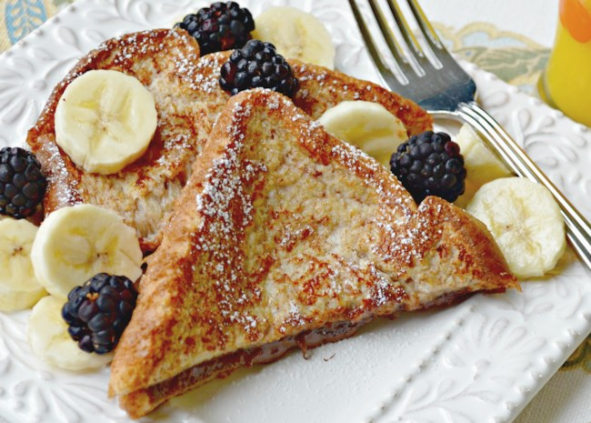

Nutella-Stuffed French Toast Recipe

Description
This recipe is for french toast that has Nutella stuffed inside. Sliced fruit, powdered sugar, and pancake syrup are exellent additions to this recipe.
This recipe was taken from allrecipes.com.
Ingredients
- 2 tablespoons of Nutella
- 4 cinnamon bread slices
- 1/4 cup milk
- 1 large beaten egg
- 1/4 teaspoon vanilla extract
- cooking spray
Steps
- Spread 1 tablespoon Nutella spread onto one side of each of 2 slices of cinnamon bread; top each with another bread slice to make 2 sandwiches.
- Beat milk, egg, and vanilla extract together in a shallow bowl until smooth. Soak each sandwich in the milk mixture until the bread is moistened, about 15 seconds per side.
- Prepare a nonstick pan with cooking spray and heat over medium-high heat.
- Cook sandwiches in the hot pan until browned on the bottom, about 2 minutes. Flip sandwiches and continue cooking until other side is browned, about 1 minute more.